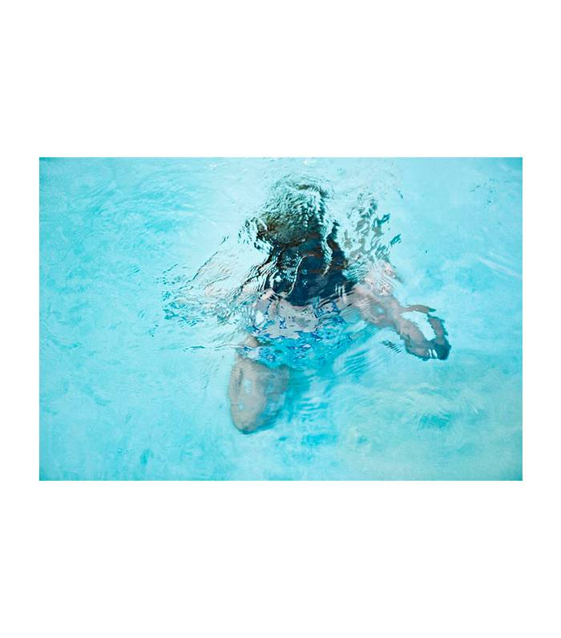
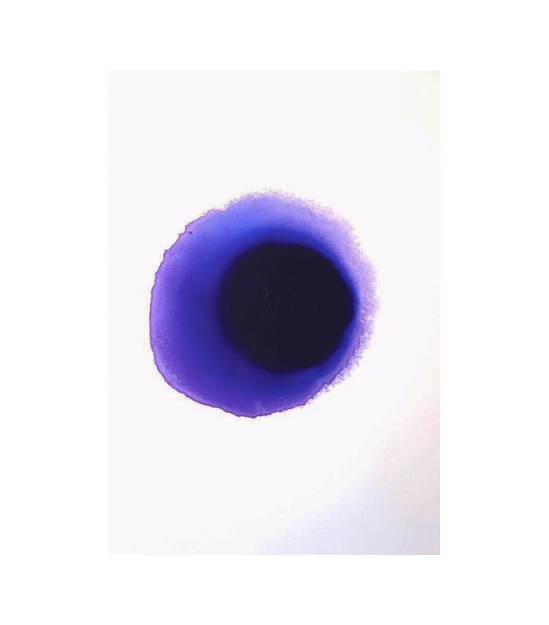
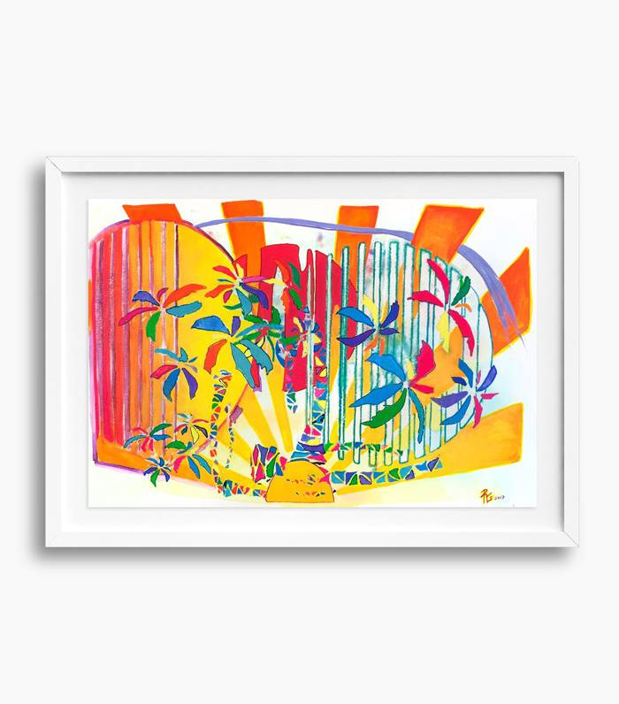

Never underestimate the power of colorful art. Though we love a good black-and-white print or abstract painting, there's just something about bold, colorful art that brings a home to life. That being said, it's also notoriously hard to find online, which is why we decided to scour the internet for beautiful pieces you'll want to adorn your walls with.
From subtle pops of muted colors to swathes of bold hues and large-scale saturated photographs, we made sure to find a variety of styles and tones for all your color needs. Whether you're looking for something that'll bring out other touches of color throughout the room or you're hoping to brighten up a neutral-hued space, you'll find something you love in our selection of 16 works of colorful art.

Maeder's work is an interesting, specialized mix of photography and watercolor. This dreamy image captures the connections we make with our environments, and it's the perfect piece to display in the bathroom or dining room.

Sergio Leiva is a blooming artist based in Costa Rica whose inky acrylic works on canvas are nothing short of powerful—visually and thematically. If you love displaying abstract work at home, this piece will add a unique mood to your space.

Created with gouache, watercolor, marker, and inkjet transfer on paper, Rives Granade's artwork is the burst of energy your walls have been craving. In his words, "The work seeks to integrate disparate imagery into a homogenous composition—referencing everything from neo-graphic design to Asian television, yet their legacy ultimately lies in relationship to surrealism. The colors are keyed high (almost neon) in order to emphasize the artificial nature of the imagery. It is my intention that these paintings be totally familiar and at the same time completely unrecognizable."
Inspired by Susan Sontag's book On Photography, Alice Quaresma invites us to think about the medium of photography and its power to not capture reality, but transform it. "I am creating an imaginary reality that invites the audience to make their truth by using images that are subjective. Breaking out of the confines of a fixed frame creates possibilities. The painted line welcomes these possibilities, as well as questioning photography's rigid assertion of objectivity," she explains.
"Atmosphere and continuity are big themes in all of my work. For the Tidal series, I drew on a palette of earthy pigments, vaporous veils of color, and delicate markings to create a sense of the fragility and strength of the natural world. As in nature, elements in the paintings replicate, change, fade, and return over and over," says Alison Cooley. Created on yupo paper, this artwork has a glassy, almost plastic-looking sheen to it, which creates a very interesting layering of dimension and color.
There's nothing like art that sends a strong message. Not only do the bubblegum pink and fire-engine red offer a fun pop of color, but the narrative is also intriguing. We love the juxtaposition between flirty, kitschy romance and overall sense of grit. It sits in a white wood shadow-box frame with a paper reveal, creating depth through the UV plexiglass.